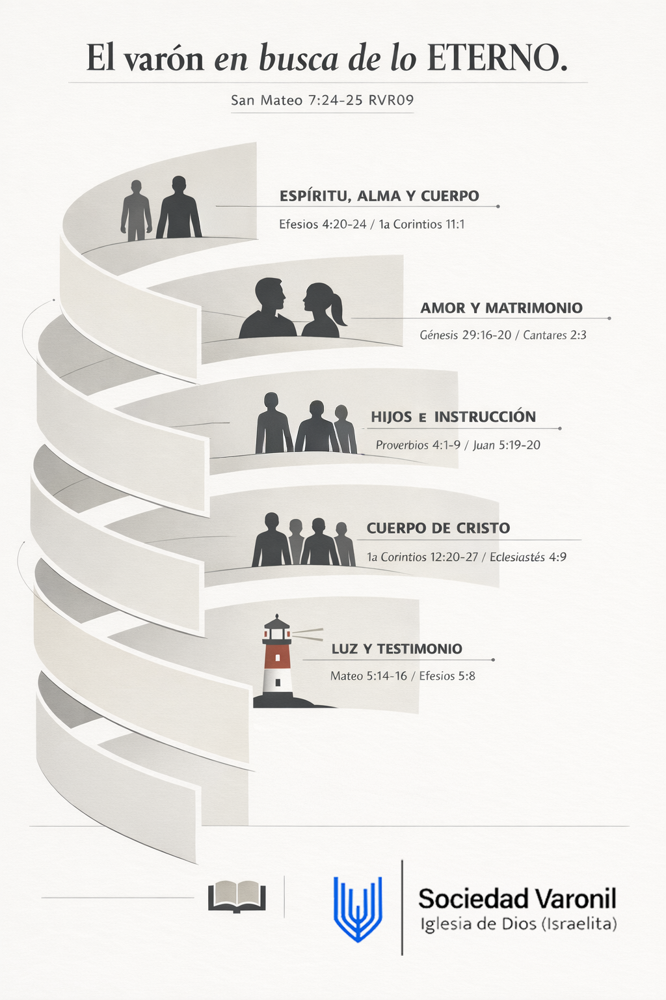

El varón en busca de lo ETERNO.
San Mateo 7:24-25 RVR09
"[24] Cualquiera, pues, que me oye estas palabras, y las hace, le compararé á un hombre prudente, que edificó su casa sobre la peña; [25] Y descendió lluvia, y vinieron ríos, y soplaron vientos, y combatieron aquella casa; y no cayó: porque estaba fundada sobre la peña."
Espíritu, Alma y Cuerpo
Hagamos al varón a nuestra imagen y semejanza
Objetivo de conocimiento: Confirmar que la imagen y semejanza de Dios es Cristo; para vivir imitándolo, y de esa manera aspirar a la vida eterna, a través de la guía de los mandamientos de Dios.
Objetivo de conducta: Dinámica de imitación; para aprender y confirmar que es la mejor manera de renovar las conductas a imagen y semejanza del que nos salvó.
Amor y Matrimonio
No es bueno que el varón esté solo
Cortejo • Enamoramiento • Responsabilidad • Agradecimiento • Respeto • Admiración = AMOR
Objetivo de conocimiento: Conocer el proceso racional, emocional y sentimental en la unión de una pareja; y las etapas que la componen, para comprender y practicar conductas que fortalezcan y mejoren la relación.
Objetivo de conducta: Dinámicas de comunicación efectiva y el efecto en las relaciones matrimoniales.
Hijos e Instrucción
Los hijos como saetas en las manos del varón de Dios
Objetivo de conocimiento: Comprender las etapas formativas de los hijos, y la importancia de la participación activa del padre en ellas; para reforzar su instrucción didáctica y práctica.
Objetivo de conducta: Dinámica de instrucción, comprensión, y acción efectiva hacia los hijos.
Cuerpo de Cristo
El varón como miembro del cuerpo de Cristo
Objetivo de conocimiento: Confirmar que poner nuestros dones y habilidades en trabajar en equipo, fortalece la unidad de los varones, y da ejemplo y motivación a las demás sociedades.
Objetivo de conducta: Dinámica de trabajo en equipo, y sus resultados.
Luz del Mundo
El varón como luz del mundo: evangelizando con buenas obras
Objetivo de conocimiento: Analizar y confirmar, que las obras en nuestra vida social, son el ejemplo de nuestra fe; y con ellas damos testimonio de nuestro Dios y su Hijo Jesucristo.
Objetivo de conducta: Dinámica de mi imagen en el espejo, y las emociones y sentimientos que produce.
Referencia Visual Original
